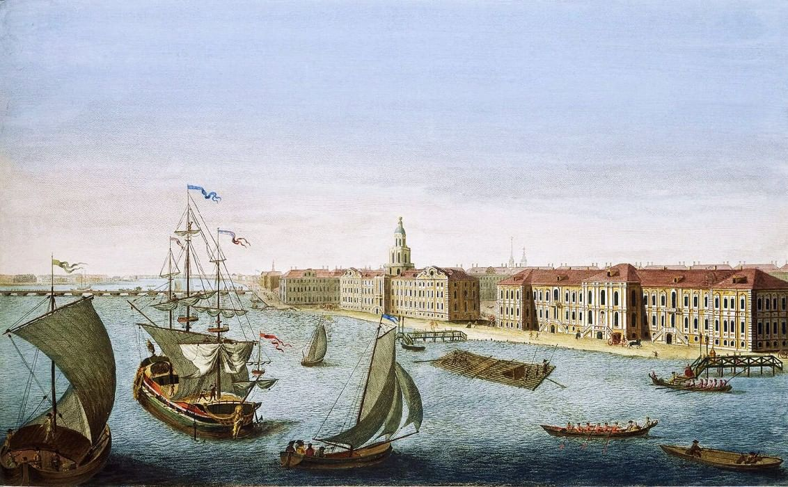

1703: Окно в Европу
27 мая 1703 года на Заячьем острове была заложена Петропавловская крепость. Этот день считается днем рождения Санкт-Петербурга.
Пётр I мечтал о мощном морском порте, который свяжет Россию с западным миром. Вопреки традициям того времени, город начал строиться не с деревянных изб, а с мощного форпоста, призванного защитить земли в устье Невы.


Город на болотах
Строительство велось в тяжелейших условиях. Низменная, болотистая местность, постоянные наводнения и суровый климат не пугали первого императора. Петербург строился по четкому плану, приглашались лучшие архитекторы Европы, чтобы создать «Парадиз» на берегах Балтики.
Уже через 9 лет, в 1712 году, город стал столицей Российского государства, забрав этот статус у Москвы на целых два века. Санкт-Петербург стал символом новой России — европейской, просвещенной и сильной.